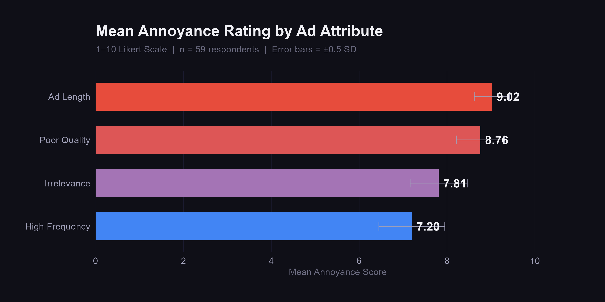
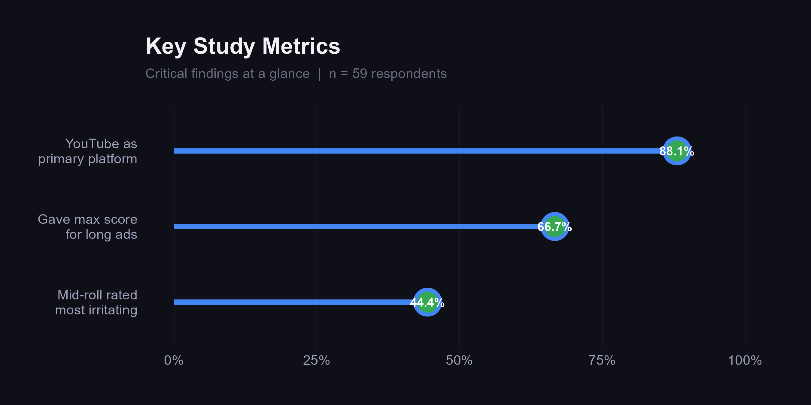
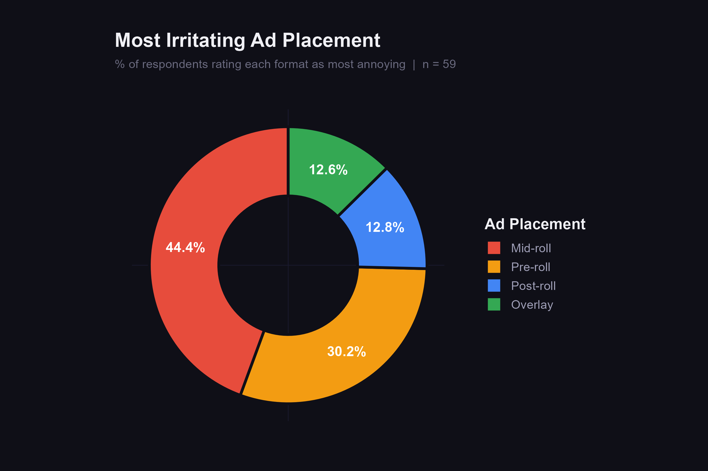
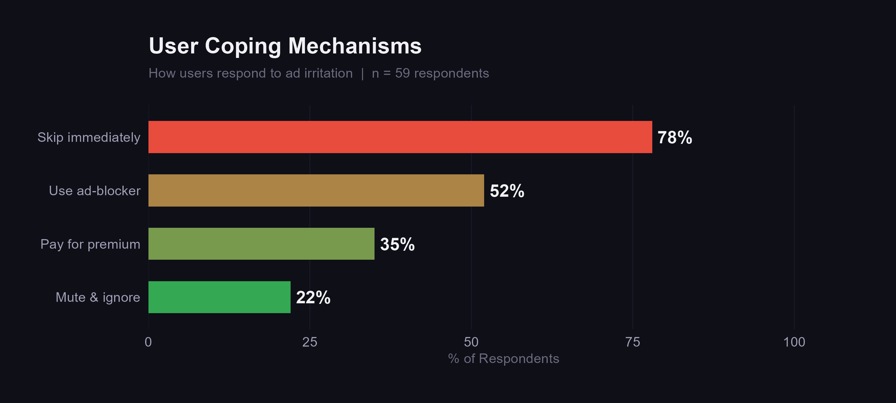

A structured funnel approach moved participants from general habits to specific irritation triggers, minimizing response bias.
Co‑designed the survey architecture and managed the distribution link.
Took full ownership of the subsequent data analysis, leading both quantitative descriptive analysis and qualitative thematic coding.
Platform usage, frequency, device preferences
Pre-roll, mid-roll, overlay — specific format reactions
1–10 Likert scale ratings + open-ended responses
Descriptive statistics on 1–10 Likert-scale responses for ad length, frequency, relevance, and quality.
Thematic coding on open-ended responses to extract motivations for voluntary engagement vs. avoidance.




High irritation drives users to ad-blockers — threatening the ad model.
Extended, poorly timed interruptions disrupt cognitive flow and trigger immediate frustration.
Users voluntarily watch ads with creative storytelling, humor, or relevant products.
Even brief ads fail if they lack production value or contextual relevance to the viewer.
Favor pre-roll over mid-roll. Enforce concise ad lengths to minimize cognitive disruption.
High-quality, concise ads cost less to place. Poor-quality ads cost more, incentivizing better content and sustaining user retention.
The sample (n = 59) heavily skewed toward YouTube users (88.1%). These findings may not generalize to swipe‑based platforms like TikTok or Instagram Reels.
Validate these findings across different devices (e.g., Smart TVs vs. mobile) to test how context and screen size shape irritation thresholds.